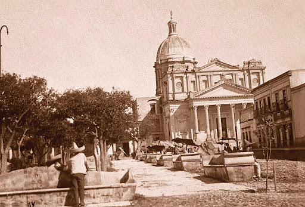
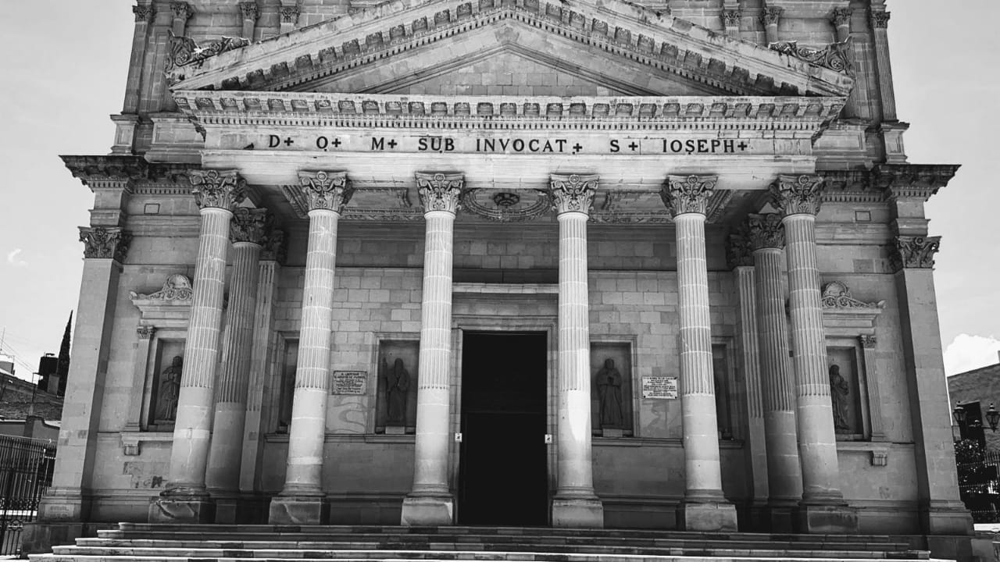

La primera iglesia construida en el actual San José Iturbide se creó en septiembre de 1763 en la congregación de “Casas Viejas”, esta se ubicaba en la falda occidental de una pequeña colina conocida como “Loma de Pájaro”, perteneciente la hacienda de El Capulín. Sin embargo, esta primera iglesia fue derribada 118 años después de su construcción.
En 1866 comenzó la construcción del templo parroquial que surge gracias a la necesidad de crear un nuevo espacio capaz de satisfacer los requerimientos parroquiales, teniendo como principales partidarios para la construcción de la iglesia en ese entonces al Dr. Domingo Rodríguez, cura de la Parroquia, encargando el diseño al ingeniero Rafael Arcaute y como administrador al padre Cipriano Rodríguez, el 23 de abril de ese año se colocó la primera piedra, en un principio se edificaron la sacristía y capilla del Señor del Santo Entierro, las cuales se bendijeron el día sábado 20 de abril de 1872. En enero de 1873 iniciaron a construirse tres columnas para los arcos del cuerpo de la iglesia. El 13 de febrero de 1875 se puso la clave del último arco del lado norte de la portada del templo Parroquial. Sin embargo, la noche del 23 de octubre de 1875 murió el Dr. Domingo Rodríguez, ocasionando la suspensión de la obra hasta la designación de un nuevo párroco. Fue hasta el 22 de diciembre del año 1875 que se continuo con la construcción de la actual parroquia, el padre Nicolas Campa fue el principal impulsor al momento de retomar la obra él decidió no continuar con el proyecto elaborado por Rafael Arcaute, pues lo consideraba poco adecuado en cuestión arquitectónica y artística, debido a ello convenció al o arquitecto Ramón Rodríguez y Arangoity de elaborar un nuevo proyecto para la Parroquia, sobre todo para la fachada y la cúpula, el diseño del arquitecto Ramón Rodríguez es el que actualmente podemos apreciar en la Parroquia.
En 1885, el Padre Nicolás Campa bendijo el órgano tubular de la Parroquia, que se adquirió en Estados Unidos desde una sinagoga judía. El Reloj Parroquial fue donado por los hermanos Miguel y Manuel Barrenechea y adquirido por el Padre Nicolás Campa durante un viaje a Europa, dicho reloj era de origen alemán y se ensambló en 1888 su costo fue de 3500 que fueron pagados en oro.
